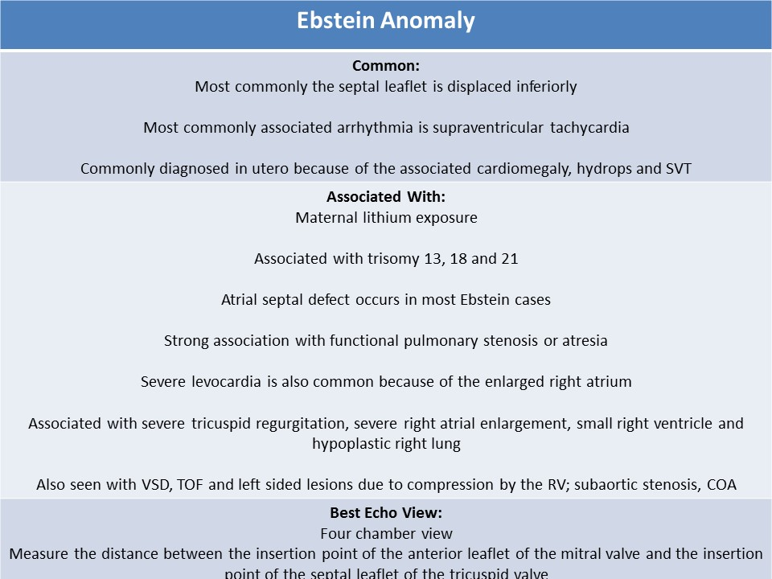
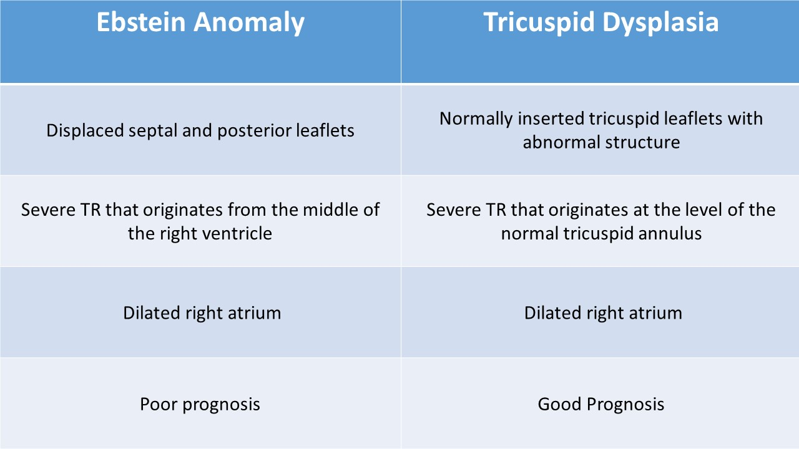
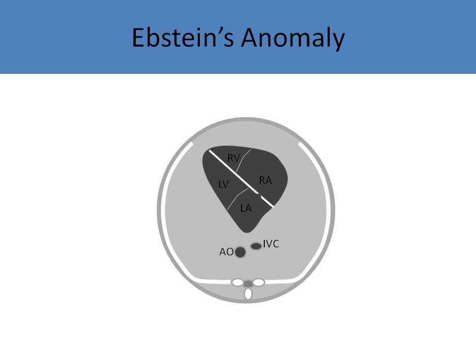
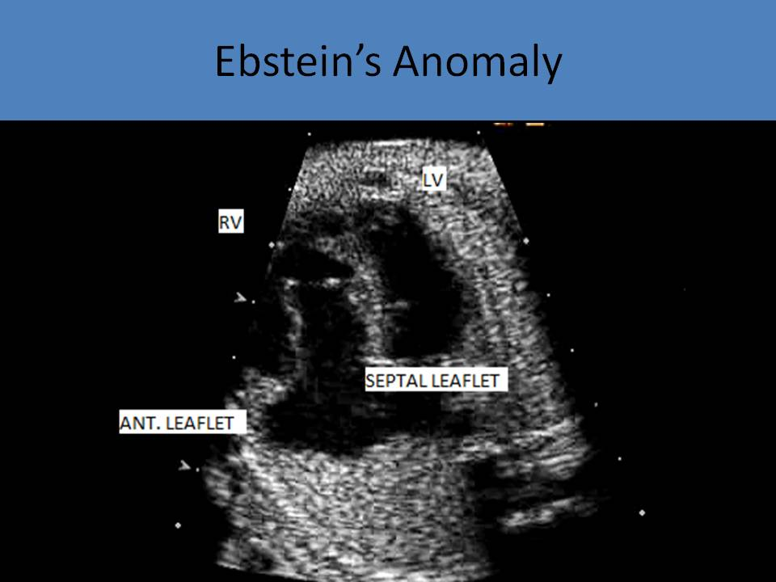
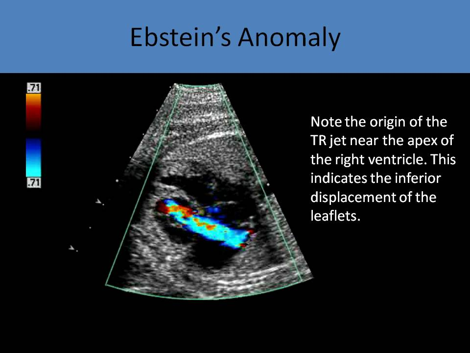
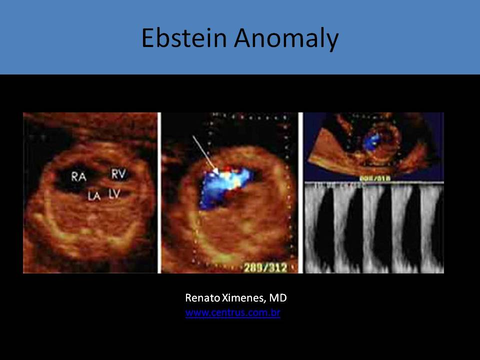
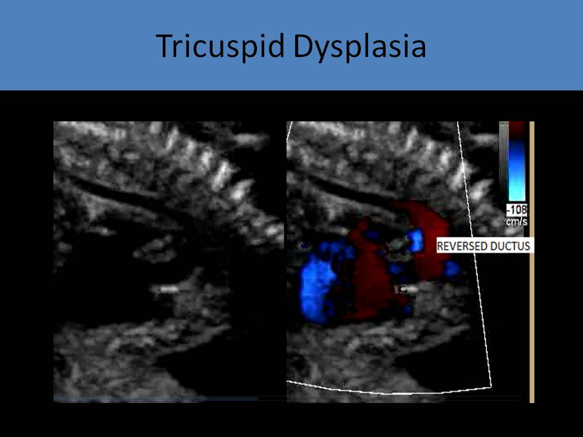
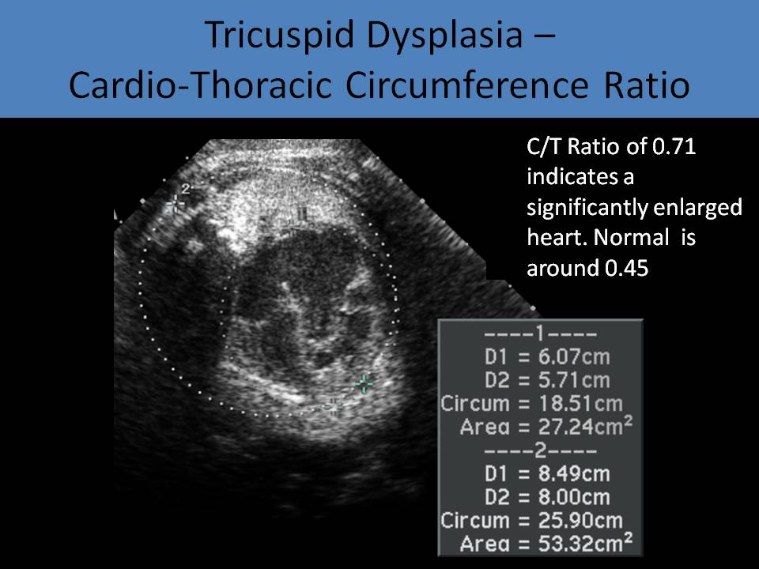

.jpg)
Ebstein anomaly/Tricuspid dysplasia
- Failure of delamination and adherence of leaflets to underlying RV myocardium
- Less than 1% of congenital heart disease cases
- Males: females=1:1
- Associated with trisomy 13, 18 and 21
- If Ebstein anomaly is identified, karyotyping should be performed
- Frequently diagnosed in utero because of the associated cardiomegaly, hydrops and SVT

Anatomy:- Congenital malformation causing the posterior and septal leaflets to be displaced inferior towards the right ventricle inlet region
- Most commonly the septal leaflet is displaced
- Causes "Atrialization" of the right ventricle
- The septal and posterior leaflets of the tricuspid valve are rudimentary and tethered
- Anterior leaflet of the tricuspid valve is normally placed and appears large and sail-like with shortened chordae
- The anterior leaflet usually delaminates completely and maintains its annular hinge at the normal atrioventricular junction
- Maternal lithium exposure is associated with Ebstein anomaly (lithium used to treat manic depressive psychosis)
- Atrial septal defect occurs in most Ebstein cases (right to left shunting=degree of cyanosis after birth)
- Right ventricular outflow obstruction is the most commonly associated type of pulmonary stenosis
- Functional pulmonary atresia is demonstrated due to the reduced force of contraction of the right ventricle, true pulmonary atresia can be seen also
- Prone to developing an arrhythmia, most commonly supraventricular tachycardia
- WPW syndrome is also common
- Associated with severe tricuspid regurgitation, severe right atrial enlargement, small right ventricle
- High velocity, holosystolic TR jet that typically originates from the middle of the right ventricle
- Right atrial dilation leads to hypoplastic lung
- Usually results in severe cardiomegaly, hydrops and tachyarrhythmias
- Can be mistaken for Uhl’s anomaly: right ventricle is very thin and has no myocytes, and cannot contract at all
- An imperforate tricuspid valve is present in a small number of cases of Ebstein anomaly; no flow detected across the TV with color or spectral Doppler; most severe form of the abnormality called imperforate Ebstein anomaly
- Prognosis is usually poor when diagnosed in utero
- ASD
- Right ventricular outflow obstruction
- VSD
- TOF
- Corrected transposition of the great arteries (left sided Ebstein)
- Left sided lesions - subaortic stenosis due to compression by the right ventricle, bicuspid AV, COA
- Right ventricle does not pump properly due to decreased flow through the tricuspid valve which causes functional pulmonary atresia
- The ductus arteriosus sends blood flow to the pulmonary artery
- Severe tricuspid regurgitation with right to left shunting across the atrial septal defect
- Cardiac output is maintained
- Restrictive interatrial shunting through the foramen ovale leads to fetal hydrops and demise
- Celermajer index: the ratio of the area of the right atrium and the atrialized right ventricle to the area of the functional right ventricle and the left ventricle = greater than 1.5 indicates poor prognosis after birth
- The best view for diagnosis: four chamber view best demonstrates displacement of the septal leaflet and enlarged right atrium
- Measure the distance between the insertion point of the anterior leaflet of the mitral valve and the insertion point of the septal leaflet of the tricuspid valve
- Cardiothoracic ratio is increased (>0.45)
- Hallmark characteristic: tricuspid valves are dysplastic and tethered, resulting in right atrial dilatation and valve incompetence
- Dysplasia of the leaflets is best seen on the subcostal 4 chamber view
- Tricuspid regurgitation is nearly always present and originates from mid right ventricle
- Severe levocardia is also common because of the enlarged right atrium
- Strong association with pulmonary stenosis or atresia
- May see bowing of the ventricular septum and compression of the left ventricle
- Atrial septal defect: right to left shunt (normal in fetal circulation)
- Ductus arteriosus: left to right (abnormal in fetal circulation)

Tricuspid Dysplasia:- Normally placed (no displacement) tricuspid valve with redundant and nodular leaflets
- Dysplastic tricuspid valves increase right ventricular pressure and lead to poor right ventricular function
- NO atrialized right ventricle, right ventricular dilatation, severe right atrial enlargement
- Right ventricular outflow tract obstruction is common in the form of the pulmonary stenosis or atresia
- Cardiothoracic ratio is increased (>0.5=50-60%)
- Exhibit severe tricuspid regurgitation that originates from the level of the TV annulus (used to differentiate from Ebstein anomaly)


Tricuspid Dysplasia
Ebstein Anomaly
Ebstein Anomaly
Ebstein Anomaly